This webpage is available at: https://cal-cs184-student.github.io/hw-webpages-sp24-0-0-00-0/hw3/index.html
Overview
In this homework, I implemented ray generation from the screen into the scene and primitive intersection tests; implemented BVH construction and intersection test for computational acceleration; implemented Monte Carlo integration of irradiance calculation and direct illumination with 2 sampling methods (sample uniformly on unit hemisphere or importance sample from light sources); implemented global illumination and compared rendered results from multiple bounces; implemented adaptive sampling for each pixel; went through nightmarish debugging.
Part 1: Ray Generation and Scene Intersection
Algorithms
Ray generation and primitive intersection
The field of vision is viewed as a rectangle with corners $(-\tan\frac{hFov}{2},-\tan\frac{vFov}{2},-1)$ and $(\tan\frac{hFov}{2},\tan\frac{vFov}{2},-1)$ in world space. For each pixel on the screen, a number of rays are generated from the camera position crossing through the corresponding square region on the field of vision, sampled uniformly at random. If a ray intersects with a primitive, the radiance from the intersection is calculated and added to the pixel.
Triangle intersection test
We use the Möller Trumbore Algorithm to calculate $t, b_1, b_2$, satisfying $\mathbf{o}+t\mathbf{d}=(1-b_1-b_2)\mathbf{p}_1+b_1\mathbf{p}_2+b_2\mathbf{p}_3$, where the ray intersects with the triangle. The tuple $(1-b_1-b_2,b_1,b_2)$ is a set of barycetric coordinates of the intersection point. First check that $t$ is within min_t and max_t of the ray; then check if $1-b_1-b_2$, $b_1$, $b_2$ are either all positive or all negative; if both are true, then the ray intersects with the interior of the triangle. The surface normal is interpolated from the vertex normals using the barycentric coordinates.
Results
Here is the normal shading for sky/CBspheres.dae:

Here is meshedit/cow.dae, which took 112 seconds to render in Debug mode of Visual Studio on my computer.
And this is sky/bunny.dae (took nearly 20 minutes to render in debug mode).
Part 2: Bounding Volume Hierarchy
Algorithm
The BVH construction goes as follows:- Calculate the average of the centroids of all bounding boxes. It's used as the splitting point, where all primitives on one side of the point are grouped to the left child node and those on the other side are grouped to the right child.
- We need to decide which of the $x$, $y$, $z$ axes to split on. We use surface area normals to decide: the surface areas of all 6 possible bounding boxes of children nodes are calculated, as well as the number of primitives for each bounding box. The axis with the least heuristic value is selected; the heuristic is calculated as
(surface_area_of_left_bounding_box * left_primitive_count + surface_area_of_right_bounding_box * right_primitive_count). In the slides, the heuristic also had a constant, which is dropped here because it doesn't affect comparison. - The primitive vector is rearranged so that primitives in each child are contiguous, making it easy to pass start and end iterators of children primitive vectors into the children nodes. If the node is leaf, then set the left and right children pointers to
NULL; otherwise, construct BVH trees recursively on children nodes.
If the centroid of a primitive's bounding box is too close to the split point, it is allocated to the shorter of the two lists at the moment; this is to avoid the case where all primitives share the same centroid, and thus allocated to only one of the children nodes, making the other child node empty.
Results
Here is the normal shading for sky/CBlucy.dae (took 9.21 seconds to render in debug mode):
Here is meshedit/maxplanck.dae:
This is cow.dae rendered again using BVH acceleration.
As far as I can tell,there is no visual difference between the previous render and this one, but it only took 1.98s to render in debug mode, compared to 112s with no acceleration. Also, bunny.daerendered with BVH took only 1.48 seconds in Release mode of Visual Studio (which seems a little faster than Debug mode). BVH accelerates the rendering process by about a hundredfold on medium to complex scenes, by cutting off subtrees and not testing many primitives that are guaranteed not to intersect with the ray.
Part 3: Direct Illumination
Algorithms
Direct lighting with uniform hemispherical sampling
For the intersection, sample a direction in the hemisphere with hemisphereSampler uniformly at random, transform it into world space, and cast a ray starting from the current hit-point and with this direction. Set the new ray's min_t to EPS_F to avoid intersecting the current intersection. Call bvh->intersect() to check if it intersects with a light source; if yes, multiply its emission with bsdf.f(w_out,w_in) (w_out and w_in are in object space), the dot product of the sampled direction and the surface normal at the intersection converted to object space, and divide it by the PDF of uniform hemisphere sampling, which is $\frac{1}{2\pi}$.
Direct lighting with importance sampling from light sources
For each light source in the scene, make ns_area_lights samples from it. For each sample, cast a ray from the current intersection's hit-point and in the sampled direction. Set min_t of the ray to EPS_F and max_t to distToLight - EPS_F. If the ray intersects with a primitive which is NOT a light source, skip this sample; otherwise, it means that nothing is blocking the light, and we make the multiplications similar to that in hemispherical sampling, and divide it by the PDF of sampling from the light source.
If the light source is a point source, we can just sample once from the light source, calculate reflected radiance, and multiply it by ns_area_lights to give it the same weight as an area light source.
Results
This is the result using hemispherical sampling on sky/CBbunny.dae, with -t 8 -s 256 -l 16:
And this is the result with importance sampling, with the same other parameters:

We can see that the result from uniform hemisphere sampling is grainier than what results from light importance sampling, and there are black spots around regions of soft shadows.
The following are the results of varying the number of light samples per area light (the -l parameter). The scene is from sky/CBspheres_lambertian.dae, using -t 16 -s 1:
-l 1

-l 4
-l 16
-l 64
We can see that with 1 sample per pixel, when light sampling rate is 1, the soft shadows are rendered as scattered black dots. As light sampling rate increases, the noise gradually diminishes into smooth shadows.
Many samples sampled with uniform hemisphere sampling are useless because they don't come from a light source with positive radiance; with the same pixel sample rate, the number of effective samples is less than that of lighting sampling, which generates all samples from light sources, and therefore the rendered images has more noise than lighting sampling.
Part 4: Global Illumination
Algorithm
My implementation of ray.depth increases as it gets deeper into the scene. A ray shot out from the camera has depth 0, and a ray hitting a light source has depth max_ray_depth.
- If
depth == max_ray_depth - 1, just returnone_bounce_radiance(). - If
depth < max_ray_depth - 1: randomly sample a direction usingbsdf->sample_f(), create a new ray withmin_t = EPS_Fanddepthincremented by 1 relative to the outcoming ray, and check if the new ray intersects with the scene; if yes, recursively call the current functionat_least_one_bounce_radiance()on the new ray, multiply it by the cosine between new direction and the surface normal, as well as current intersection's BSDF, and divide by the BSDF's sampling PDF to obtain the outcoming radiance. - If
isAccumBouncesis true, anddepth < max_ray_depth - 1, add an additionalone_bounce_radiance()to the result. In this way radiance of every number of bounces are accumulated.
To implement Russian Roulette, a termination probability dropout is set. The function has dropout probability to return Vector3D(0), and 1 - dropout probability to execute the above procedure and finally dividing the result by 1 - dropout.
Results
Scenes generated with global illumination
Here is a global illumination of CBspheres_lambertian.dae, with parameters -t 16 -s 1024 -l 4 -m 5:
With only direct illumination:
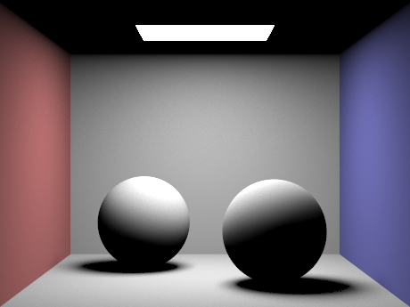And with only indirect illumination:
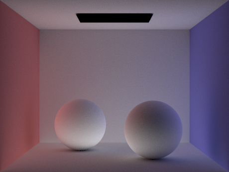This is global illumination of CBbunny.dae using the same parameters:
Renders with varying number of light bounces
The following are the results of CBbunny.dae with renders of each bounce and renders of accumulated bounces, using -t 16 -s 1024 -l 4 and varying -m.
|
|
|
|
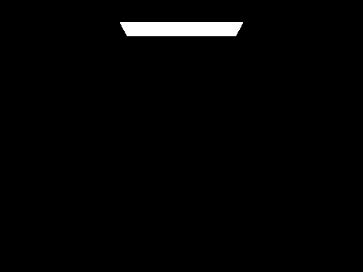 | |
|
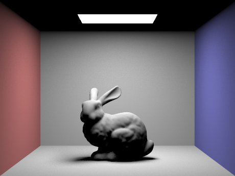 | |
|
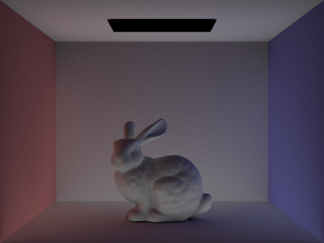 | 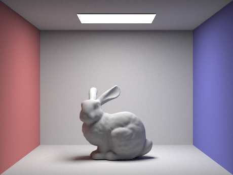 |
|
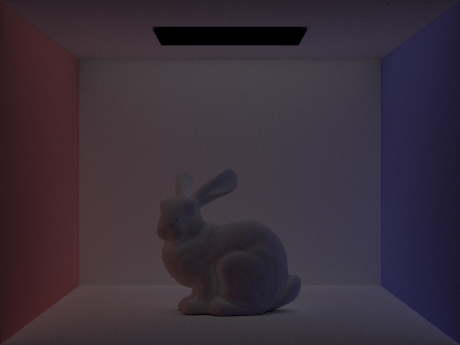 | 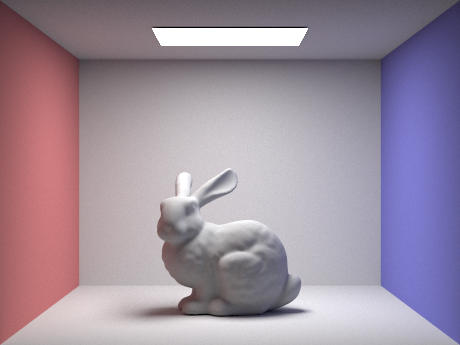 |
|
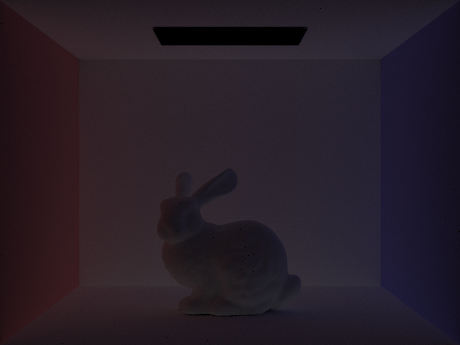 | |
|
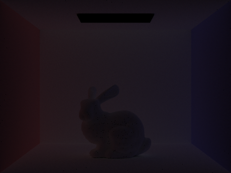 |
In the 2nd bounce, there is light on the bottom side of the bunny, reflected by the floor, as well as the red and blue lights from the walls reflected by the bunny; in the 3rd bounce there is extra light from the top and the sides. These provide a more realistic rendering, as light in reality tends to bounce towards infinity.
Renders with Russian Roulette termination
These images are generated with Russian Roulette with a termination rate of 0.3. Using -t 16 -s 1024 -l 4, and varying -m.

-m 0
-m 1
-m 2
-m 3
-m 4
-m 100
Renders with varying pixel sample rates
These results are from CBspheres_lambertian.dae with -s values 1, 2, 4, 8, 16, 64, 1024 respectively. Using -t 16 -l 4 -m 5, without Russian Roulette termination.
As pixel sampling rate increases, there is less noise in the image; when the pixel sampling rate is low, the noise is distributed evenly across the image.
Part 5: Adaptive Sampling
Algorithm
Adaptive sampling is the practice of stop acquiring more samples when the current samples gives a fair confidence that the future samples will be very close to the current sample mean. For every pixel, suppose $n$ values have been obtained from random ray samples through this pixel. 2 quantities are traced: the current sample sum $s_1=\sum_{i=1}^{n}{x_i}$ and the current sum of squares of sample values $s_2=\sum_{i=1}^{n}{x_i^2}$. After every 32 samples, calculate $$\mu=\frac{s_1}{n}$$ $$var\_n=\frac{\sigma^2}{n}=\frac{s_2-\mu s_1}{n(n-1)}$$ Then calculate $I=\sqrt{var\_n}\cdot 1.96$. Here the sample values and $I$ are all of type Vector3D, and the square root is element-wise. If every component in $I$ is less than or equal to $maxTolerance\cdot\mu$, then break from the current sample loop and stop sampling for the current pixel. Use the mean value of samples from the current pixel as the result.
Results
Here is the rendered image for CBbunny.dae with parameters -t 16 -s 2048 -l 1 -m 5 -a 32 0.05, without Russian Roulette termination.
Here is the adaptive sampling rate for each pixel as well, increasing from blue to green to red.
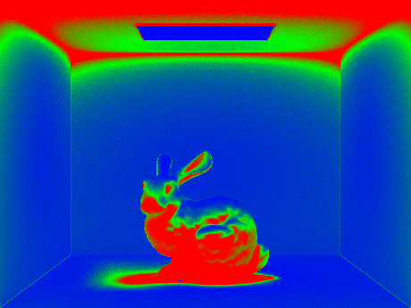Here is CBspheres_lambertian.dae and the sampling rate with the same parameters.